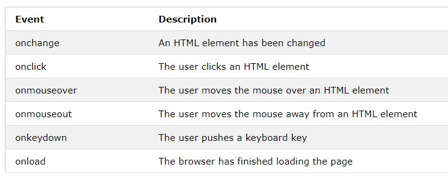

W3 Schools: JavaScript
W3 Schools: Where to write JavaScript
JavaScript is one of the 3 languages all web developers must learn:
1. HTML to define the content of web pages
2. CSS to specify the layout of web pages
3. JavaScript to program the behavior of web pages
Processing is based on Java. That doesn’t mean it’s related to JavaScript.
W3 Schools is a great resource for learning native JS.
When a web page is loaded, the browser creates a Document Object Model of the page. The HTML DOM model is constructed as a tree of Objects.
JavaScript can listen for certain HTML events (when a user interacts with an HTML element). Here are some common ones:

The full list is much longer.
Example Usage: This creates a button, with the word “Click Me” written on it. When the button is clicked, myFunction() is executed.
<button onclick="myFunction()">Click Me</button>
Remember how there were 3 different ways to implement CSS? You can effectively consider the same 3 ways for JavaScript:
“onclick” or similar attribute
(Example_00 - Example_02)<script> in the same file
(Example_03) One of many JavaScript HTML methods is getElementById(). This example uses the method to "find" an HTML element (with id="demo") and changes the element content (innerHTML) to "Hello JavaScript":
document.getElementById("demo").innerHTML = "Hello JavaScript";
Try it yourself! Also, try copying and pasting the code into an index.html file, and run that locally in your browser. You should get the same result.
This example changes an HTML image by changing the src (source) attribute of an <img> tag:
document.getElementById('myImage').src='pic_bulbon.gif';
Try it yourself! If you want to try this example locally, you'll need to make sure the src attribute links actually point to images.
Changing the style of an HTML element, is a variant of changing an HTML attribute:
document.getElementById('demo').style.fontSize='35px';
The previous JavaScript examples were Inline - a simple line of JS code called by using the “onclick” or similar attribute. The following code shows an example of Internal JavaScript, by wrapping the JS code in a <script> tag in the same file. Notice that the CSS is also Internal, wrapped in a <style> tag.
<!DOCTYPE html>
<html>
<style>
#container {
width: 400px;
height: 400px;
position: relative;
background: yellow;
}
#animate {
width: 50px;
height: 50px;
position: absolute;
background-color: red;
}
</style>
<body>
<p>
<button onclick="myMove()">Click Me</button>
</p>
<div id ="container">
<div id ="animate"></div>
</div>
<script>
function myMove() {
var elem = document.getElementById("animate");
var pos = 0;
var id = setInterval(frame, 5);
function frame() {
if (pos == 350) {
clearInterval(id);
} else {
pos++;
elem.style.top = pos + 'px';
elem.style.left = pos + 'px';
}
}
}
</script>
</body>
</html>
Create a new directory (folder) called Example_03. Inside, create an index.html file. Try pasting the above code into te index.html file and running it in your browser. This example is a bit more complicated than what we've looked at before. Don't worry about how the JavaScript actually works; let's focus on its result. Notice that we've created 2 <div> sections, and are applying a unique style to each. The "container" div is styled yellow, and the "animate" div is styled red. The script will move the position of the "animate" div within the "container" div. Notice that the animation doesn't begin until the button is clicked, which executes the JavaScript function.
As opposed to keeping the internal CSS and JS content, we can transfer the contents of either (or both) to external files. You can read more here about where to write JavaScript.
First, copy the directory from the previous example and rename it Example_04. Inside, create two new files, script.js and styles.css. Next, remove the contents of the <script> tags and place them inside of script.js, so that its contents are:
function myMove() {
var elem = document.getElementById("animate");
var pos = 0;
var id = setInterval(frame, 5);
function frame() {
if (pos == 350) {
clearInterval(id);
} else {
pos++;
elem.style.top = pos + 'px';
elem.style.left = pos + 'px';
}
}
}
Next, do the same for the contents of the <style> tags, so that styles.css looks like:
#container {
width: 400px;
height: 400px;
position: relative;
background: yellow;
}
#animate {
width: 50px;
height: 50px;
position: absolute;
background-color: red;
}
Finally, only the following should be remaining in index.html:
<!DOCTYPE html>
<html>
<body>
<p>
<button onclick="myMove()">Click Me</button>
</p>
<div id ="container">
<div id ="animate"></div>
</div>
</body>
</html>
Start with the following code snippet. Change it by adding an event so that when the button is clicked, myFunction() is called. Hint: Add an onclick event.
<!DOCTYPE html>
<html>
<body>
<p>
<button>Click Me</button>
</p>
<p id ="demo"></p>
<script>
function myFunction() {
document.getElementById("demo").innerHTML = "Hello World";
}
</script>
</body>
</html>